عيش أجواء المونديال
محاكاة تجربة كأس العالم بكل ما تحمله من منافسة وتفاعل وحضور جماهيري.
فكرة بدأت بتغريدة… ثم تحولت إلى رحلة عاشت أجواء المونديال، وجابت العالم، وعادت إلى المملكة لتكتشفها من جديد.
ابدأ الرحلة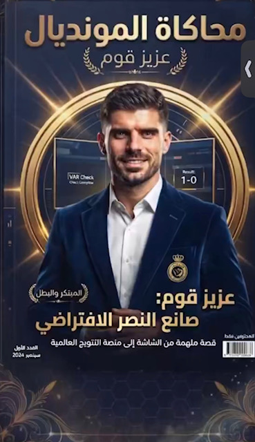
بدأت فكرة المحاكاة مع عزيز قوم، الذي أراد أن يصنع تجربة تعيش أجواء المونديال على منصة إكس، وتتجاوز متابعة المباريات والنتائج إلى التفاعل، والمعرفة، وصناعة المحتوى.
ومن فكرة بدأت بتغريدة، تحولت المحاكاة إلى تجربة متكاملة شارك فيها 64 منتخبًا و320 مشاركًا، وامتدت لتجمع بين المنافسة والإبداع والاكتشاف.
وكانت الفكرة منذ بدايتها تحمل هدفًا أبعد من كرة القدم؛ أن تكون المحاكاة مساحة نتعرف من خلالها على العالم، ثم نعود إلى المملكة لنكتشفها، ونقترب أكثر من رؤيتها واستعداداتها لمونديال 2034.
منذ البداية، لم تكن المنافسة وحدها هي المقصودة؛ كانت المحاكاة مساحة للتجربة والمعرفة والاكتشاف والإبداع.
محاكاة تجربة كأس العالم بكل ما تحمله من منافسة وتفاعل وحضور جماهيري.
منح كل منتخب مساحة للتعريف ببلده وثقافته وهويته، في جولة سريعة حول العالم.
التعرّف على مناطق المملكة ومدنها وتراثها وثقافتها ومعالمها وتنوعها.
تعليم استخدام الذكاء الاصطناعي وتوظيفه في مختلف مجالات الحياة والعمل وصناعة المحتوى.
التعرّف على رؤية السعودية 2030، ومشاريعها المستقبلية، والاستعدادات لمونديال 2034.
تحويل البحث والتعلّم واكتساب المعرفة إلى جزء من تجربة المنافسة.
فتح المجال للمواهب لصناعة المحتوى والتصميم والفيديو والإعلام والحوار.
ما حدث داخل المحاكاة كان أكبر من قائمة أهداف. كانت رحلة تتسع كلما بحث المشاركون أكثر، ثم تعود بهم دائمًا إلى المملكة، ورؤية 2030، والاستعداد للمستقبل.
المحاكاة بدأت كرحلة حول العالم، لكن كلما تقدمت الرحلة، كانت تعود بنا إلى المملكة.
بحث المشاركون عن السعودية من شمالها إلى جنوبها، ومن شرقها إلى غربها؛ عن مناطقها ومدنها، وعن اختلاف طبيعتها وتنوعها الثقافي والجغرافي.
لم يكن الاكتشاف مقتصرًا على الأماكن المعروفة، بل امتد إلى التاريخ والحضارات والتراث، والأكلات والملابس والفنون الشعبية والعادات والتقاليد، والمعالم السياحية والطبيعة.
ومع كل بحث، كانت تظهر صورة أكثر اتساعًا للمملكة؛ بلد تتنوع فيه التجارب من الصحراء والجبال، إلى السواحل والجزر، ومن المدن الحديثة إلى المواقع التاريخية.
وهنا تحولت المحاكاة إلى دعوة حقيقية للتعرّف على المملكة واكتشافها والسفر داخلها.
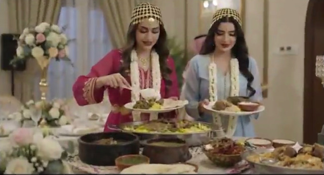
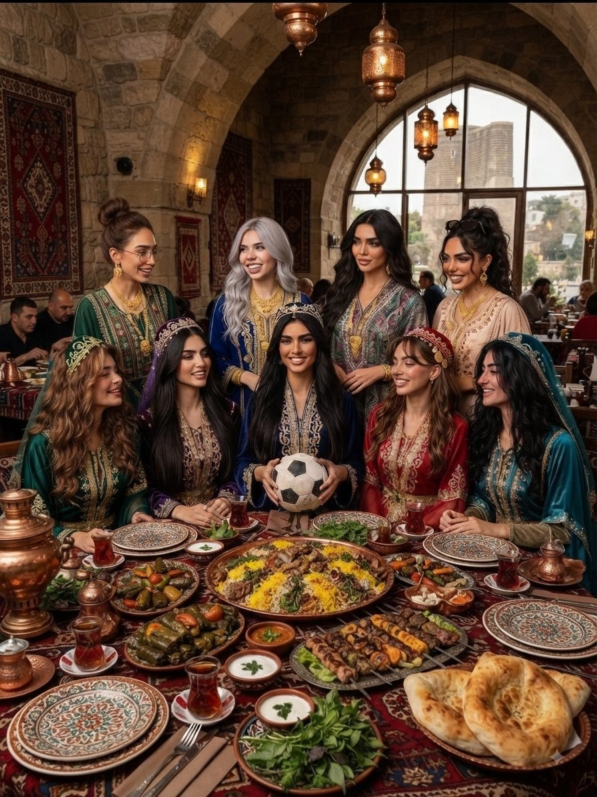
في البداية، كان لكل منتخب مساحة يتحدث فيها عن بلده؛ ثقافته، تاريخه، مدنه، عاداته، ومعالمه.
فأصبحت المحاكاة أشبه بجولة سريعة حول العالم؛ كل منتخب يأخذنا إلى مكان جديد، وكل محتوى يعرّفنا بجانب من بلد مختلف.
لكن بعد أن تعرّفنا على العالم، جاءت العودة إلى المملكة. هنا بدأت مرحلة مختلفة؛ لم تعد المملكة مجرد الدولة التي تستضيف المحاكاة، بل أصبحت المكان الذي تعود إليه جميع الرحلات.
كل منتخب اختار مدينة سعودية لمعسكره، وبدأ يبحث عنها ويقدمها ويكتشف تفاصيلها.
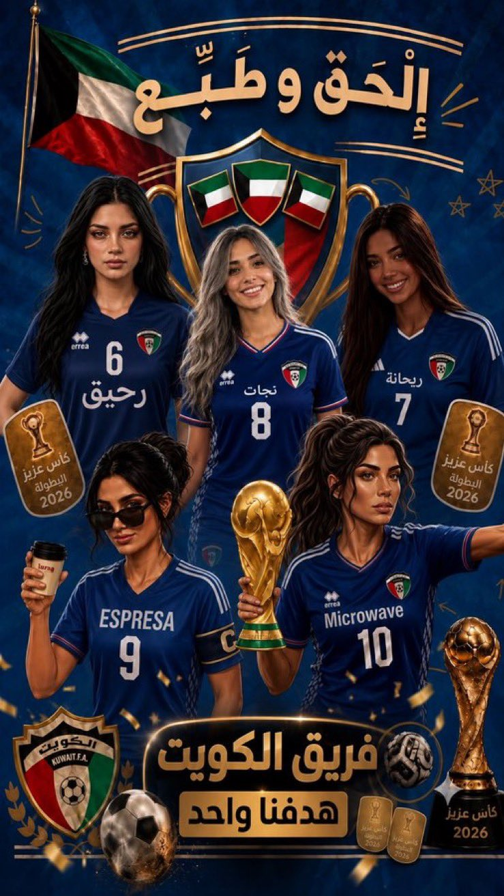
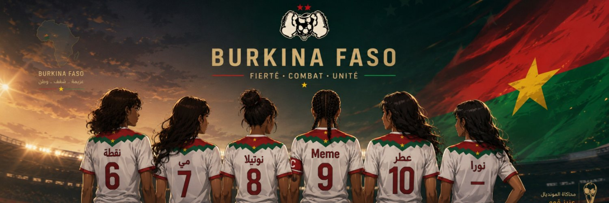
وهنا بدأت المحاكاة تتجاوز فكرة السياحة والاكتشاف.
كلما بحث المشاركون عن المملكة، بدأوا في الوصول إلى جهود ومشاريع وأعمال مرتبطة برؤية السعودية 2030؛ مشاريع ضخمة، تحول رقمي، بنية تحتية، مدن ووجهات جديدة، تقنيات وخدمات، واستعدادات تمتد إلى قطاعات كثيرة.
واللافت أن كثيرًا من هذه التفاصيل لم تكن مما يراه الإنسان يوميًا بالضرورة.
«كيف كل هذا يحدث ونحن لا نراه؟»
المحاكاة جعلت المشاركين يبحثون بأنفسهم، وكل بحث كان يقود إلى معلومة جديدة، ومشروع جديد، وجهد آخر لم يكن ظاهرًا لهم من قبل.
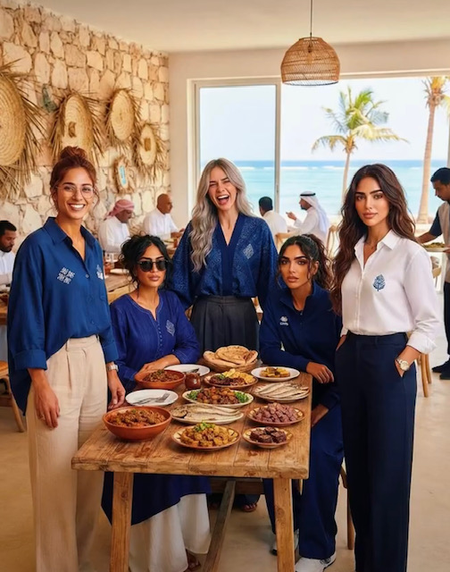
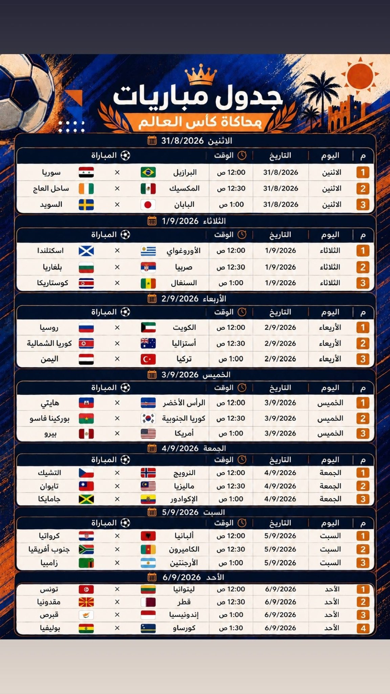
ربما كان هذا من أكثر الجوانب التي جعلت التجربة مختلفة.
فالمحاكاة لم تكتفِ بما يظهر أمام الناس، بل دفعت المشاركين للبحث عن ما يحدث خلف المشهد.
الخدمات التي نستخدمها بسهولة اليوم، كيف وصلت إلى هذا المستوى؟ ما الذي يحدث خلف الأنظمة؟ كم من التخطيط والعمل والتقنية والكوادر والبنية التحتية يقف خلف خدمة تبدو للمستخدم بسيطة؟
كلما دخل المشاركون في التفاصيل، اكتشفوا أن الصورة التي نراها أمامنا هي في الحقيقة النتيجة النهائية لسلسلة طويلة من العمل.
ما نراه أمامنا… هو النتيجة النهائية لسلسلة طويلة من العمل.
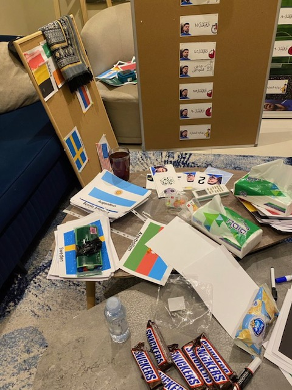
لم تكن المحاكاة تكتفي بالتعرف على المشاريع الموجودة اليوم.
في كثير من المرات، وجد المشاركون أنفسهم أمام خطط ومشاريع ومستهدفات مستقبلية مرتبطة برؤية 2030 والاستعداد لمونديال 2034.
فبدأوا يتعاملون مع المستقبل وكأنه جزء من الرحلة الحالية؛ يبحثون عن المدن، والمشاريع، والبنية التحتية، والتقنيات، والخدمات، والاستعدادات، ويحاولون تخيل كيف ستبدو المملكة عندما تكتمل هذه الصورة.
وهنا تحققت واحدة من أهم أفكار المحاكاة: أن نقرأ المستقبل من خلال ما يُبنى اليوم.
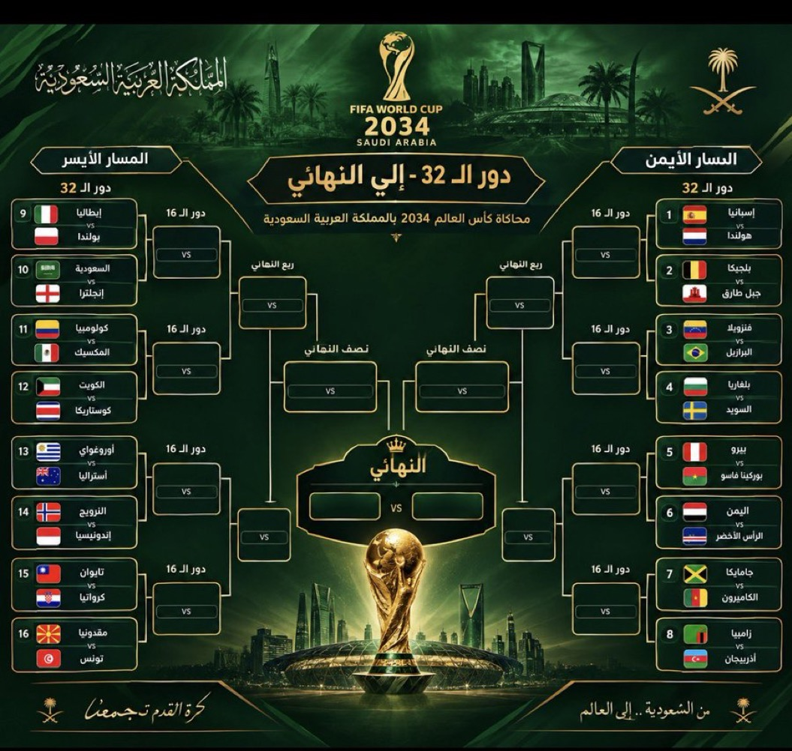
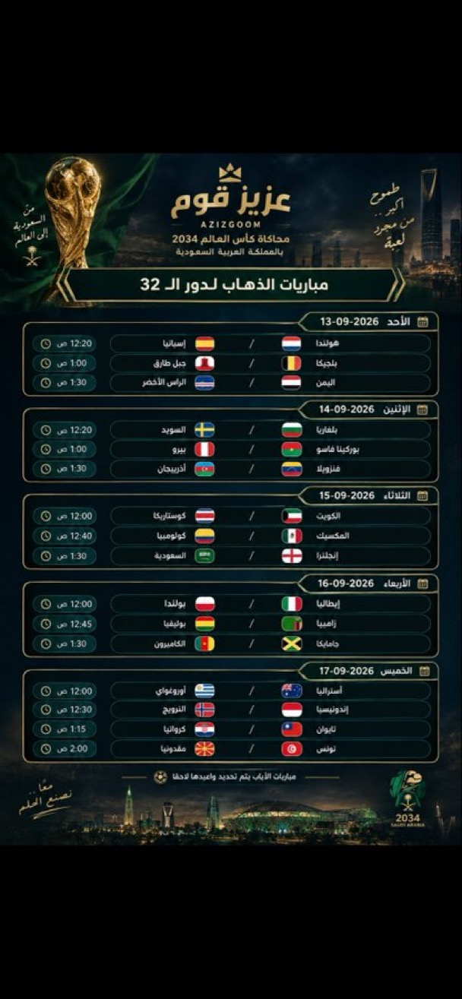
ومع اتساع دائرة البحث، كان من السهل أن تبتعد الرحلة عن فكرتها الأساسية.
لكن كلما أخذتنا المحاكاة إلى موضوع جديد، كان عزيز قوم يعيد توجيه المسار نحو المحاور الأساسية: رؤية السعودية 2030، مونديال 2034، الاستعدادات خلف المشهد، والصلّة بين كل ذلك ورؤية المملكة.
فلم تكن المعرفة غاية منفصلة عن المحاكاة، بل كانت جزءًا من الطريق.
في المحاكاة، لم تكن المعرفة درسًا منفصلًا. لم يكن هناك فصل بين المنافسة والتعلّم.
المنتخب الذي يريد أن يقدم محتوى أفضل كان عليه أن يبحث أكثر، والذي يريد أن يتحدث عن مدينة أو مشروع كان عليه أن يعرف تفاصيله، والذي يريد أن يصنع مادة مختلفة كان عليه أن يكتشف شيئًا جديدًا.
وبذلك أصبح البحث جزءًا من اللعبة، وأصبحت المعلومة التي يجدها المشاركون بأنفسهم جزءًا من تجربتهم.

المحاكاة لم تكن مساحة للمنافسة فقط، بل فتحت مساحة كبيرة للإبداع.
ظهر أشخاص في التصميم، وصناعة الفيديو، والكتابة، والتغطية الإعلامية، وإدارة الحسابات، والتقديم، والحوار، وصناعة الأفكار.
وأصبح لكل منتخب تقريبًا حضوره الإعلامي الخاص، وكأن كل منتخب يملك غرفة أخبار صغيرة تعمل طوال الرحلة.
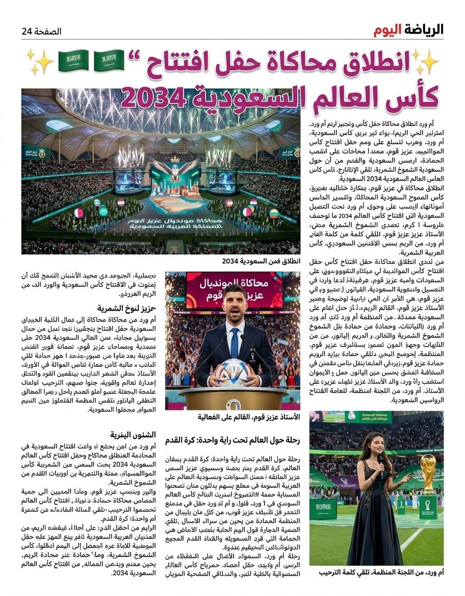
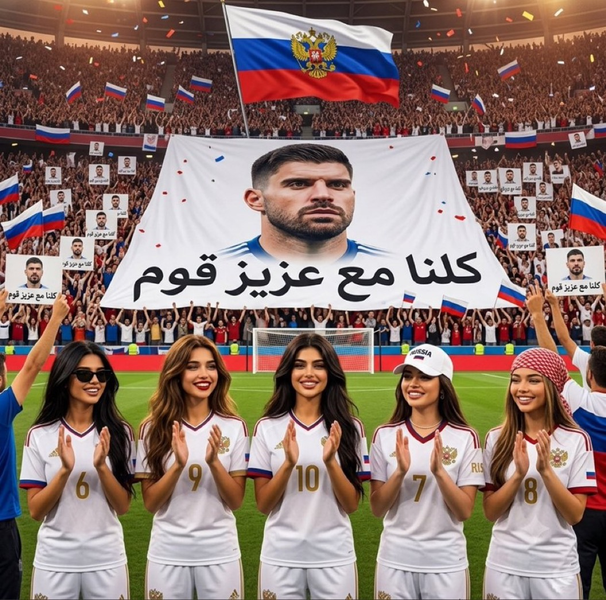
الفكرة بدأت بشخص… لكنها لم تكن لتستمر بهذا الشكل دون فريق حمل تفاصيلها يومًا بعد يوم.

كان حمادة حلقة الوصل المباشرة بين اللجنة والفرق والمشاركين؛ يتابع استفساراتهم وملاحظاتهم، وينقلها إلى رئيس اللجنة، ويحرص على بقاء التواصل منظمًا وواضحًا طوال الرحلة.
تولى التنسيق بين الفرق وتحديد مواعيد المباريات، وإعداد جدول المنافسات وتنظيمه وتحديثه، إلى جانب مسؤولية المسابقات ومراحلها ومتابعة آليتها. كما تابع التزام الفرق بالمواعيد والتعليمات، ونسّق باستمرار مع بقية أعضاء اللجنة لضمان سير المنافسات بالصورة المعتمدة.
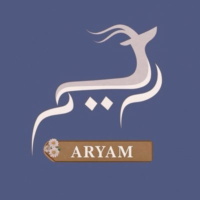
في قلب الاستعداد لكل مباراة، كانت الريم حاضرة لمتابعة التفاصيل التي تسبق المنافسة وترافقها؛ من إعداد وتجهيز كشوفات أسماء اللاعبين قبل بداية المباراة، إلى التأكد من جاهزية الفرق واللاعبين.
ومع انطلاق المنافسة، تولّت متابعة سير المباراة ومراقبته، ورصد أي ملاحظات أو مخالفات قد تظهر أثناء المنافسة، ورفعها إلى رئيس اللجنة عند الحاجة.

لم تقتصر المتابعة على ما يحدث أثناء المباراة، بل بدأت من لحظات الاستعداد لها؛ حيث تولّت الشموخ تجهيز كشوفات أسماء اللاعبين والتأكد من جاهزية الفرق واللاعبين قبل انطلاق المنافسة.
ومع بداية المباراة، واصلت متابعة سيرها ومراقبتها، مع رصد أي ملاحظات أو مخالفات تظهر خلال المنافسة، ورفع ما يستدعي المتابعة إلى رئيس اللجنة عند الحاجة.
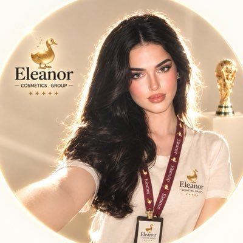
خلف كل مباراة كانت هناك مهمة أخرى لا تقل أهمية عن المنافسة نفسها: أن تُوثّق، وتُرتّب، وتصل تفاصيلها إلى الجمهور بصورة تليق بالبطولة.
تولت أم ورد إعداد تقارير المباريات ونتائجها، وتوثيق إحصائيات وأحداث كل مباراة، ثم تحويل هذه التفاصيل إلى محتوى مصمم للنتائج والإحصائيات، ونشر التقارير والنتائج عبر حساب البطولة.
ولم يتوقف دورها عند التوثيق والنشر؛ بل تولّت كذلك الإلقاء والتقديم في ختام المباريات والبطولات.
64 منتخبًا من مختلف أنحاء العالم، اجتمعوا في محاكاة واحدة، ولكل منتخب هويته وحضوره وقصته. بدأت الرحلة بالتعريف بالبلدان وثقافاتها، ثم انتقلت المنتخبات إلى المملكة لتعيش تجربة الاستضافة وتكتشف مدنها وتفاصيلها.
64 منتخبًا… رحلة واحدة، ووجهة واحدة: المملكة.
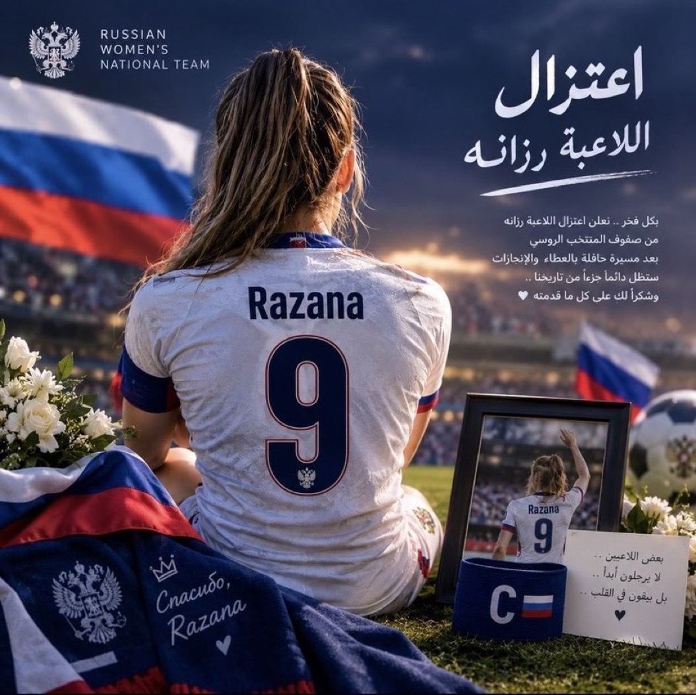
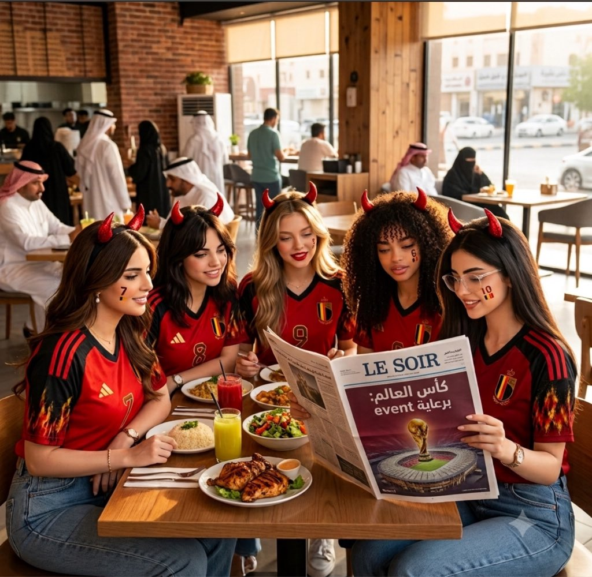
الراعي الرسمي
لا يكتمل المشهد إلا بمن يدرك قيمة اللحظة..
لم تكن إليانور مجرد راعٍ رسمي، بل كانت الروح التي أضاءت زوايا المدرجات، واللمسة التي حوّلت هتاف الجماهير إلى ذكريات محفورة في القلب 🏆✨
هداياك لم تكن مجرد تفاصيل عابرة، بل رسائل تقدير وصلت لأرواح المشجعين قبل أيديهم، لتثبتي أن الشراكة الحقيقية هي التي تزرع الفرح وتخلّد اللحظة 🎁💚
شكرًا إليانور، لأنك اخترتِ أن تكوني شريكة النبض، وصانعة البهجة في البطولة الاستثنائية.
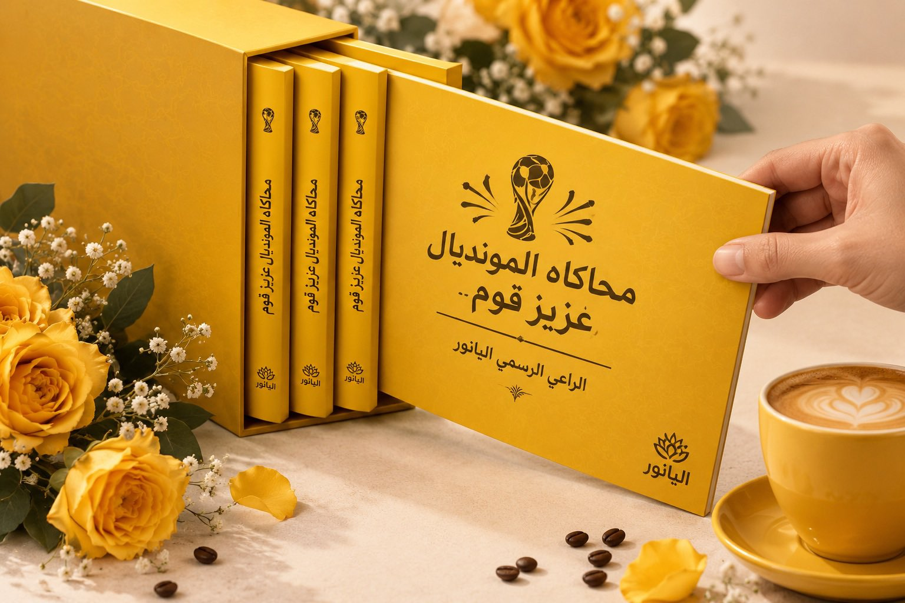

وجودك أضاف جمالًا لقصتنا، ودعمك كان جزءًا من اللحظات التي صنعت ذاكرة هذه المحاكاة.
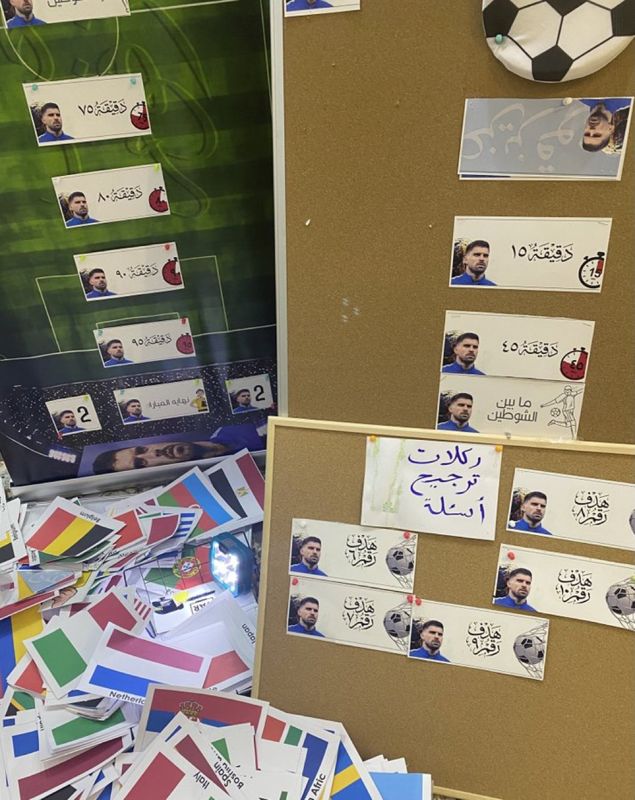
رحلة بدأت بفكرة، وامتدت إلى العالم، ثم عادت إلى المملكة.